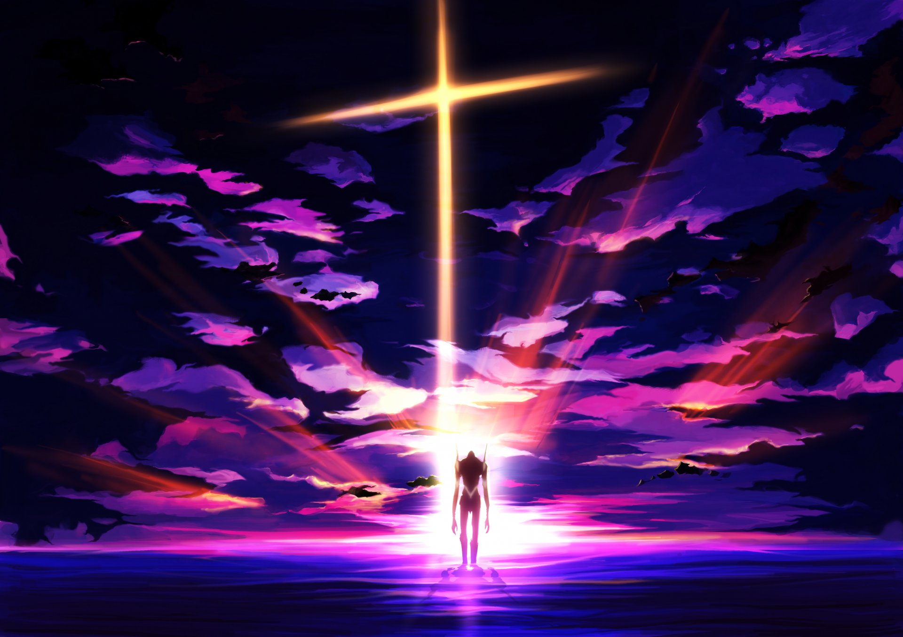

Капитан... А вы....слышали о море?.... Об этом огромном, почти бескрайнем озере, уходящем за горизонт? Мы хотели однажды взглянуть на него, на то самое море, которое лежит за стенами. Но я... я давно о нём позабыл... Мы мечтали об этом ещё в детстве. Я хотел убить титанов и отомстить за свою мать. Меня вела вперед только ненависть. Но Армин... он совершенно другой. Он думает не только о войне... У НЕГО ЕСТЬ МЕЧТА
У тебя и правда красивые глаза.Словно ягоды боярышника, колышущиеся на ветру, но... Даже птицы их не едят. Они не сладкие, горькие или ядовитые, они просто никакие. Совершенно бесполезные, пустые ягоды. Никто не хочет их сорвать, они остаются одни, увядая, высыхая и умирая.
Аниме:Бездомный БогНора
Всё, что ты делаешь — сидишь и ждёшь, когда кто-нибудь сделает тебя счастливым! Но это фальшивое счастье!
Своя собственная смерть — вот единственная полная свобода.
Люди — очень странные создания! Почему-то их ужасно волнует мнение других. Из-за этого они злятся, переживают, впадают в отчаяние... Люди не перестают поражать меня.
Существует, так называемая, «Дилемма дикобразов». Если они захотят согреть друг друга, то чем тесней они сблизятся, тем сильнее будет боль от уколов игл. Тоже самое и с людьми. Должно быть, Синдзи замкнут так замкнут, потому что боится уколоться.
Только люди пытаются подчинить себе то, что может их уничтожить. Только люди могут быть так безрассудны.
Тебя не интересуют другие, но ты ненавидишь одиночество.